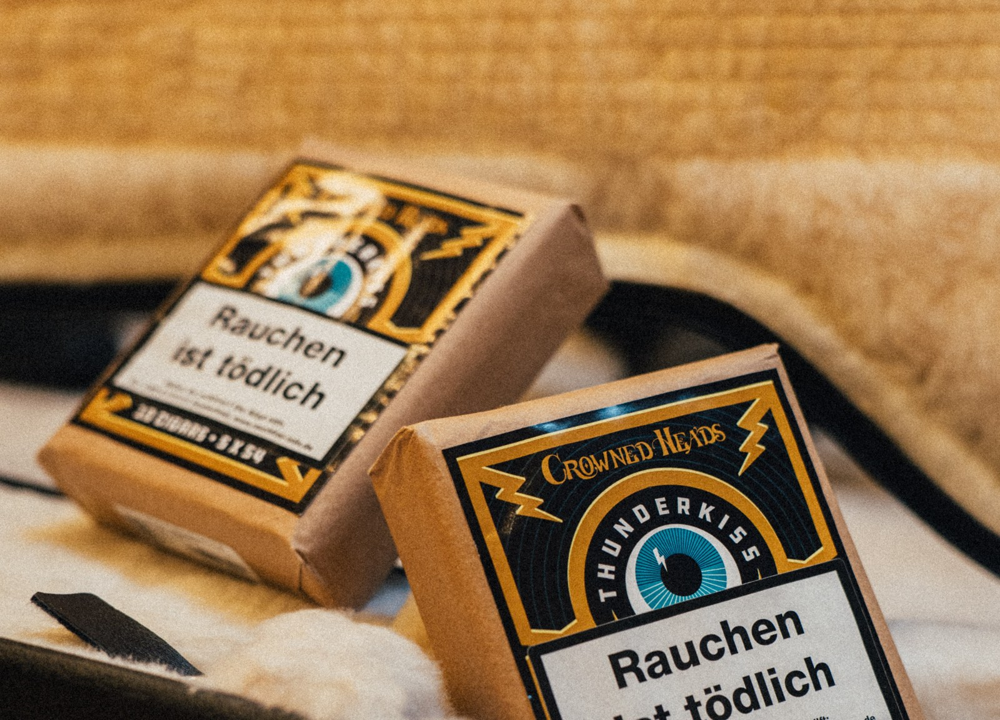

Germany — Cigar News
Premium cigar news from Germany.

Market & Distribution · Germany
German cigar merchant DALAY is bringing Crowned Heads' new long-filler line Thunderkiss to the German market, further extending its Crowned Heads range. Photographs show a 5 x 54 cigar in 10-count packs carrying German health warnings; blend and pricing details have not been announced.
Crowned Heads · November 14, 2026
Read the full story ›

New Release · Cuba · Germany
Habanos, S.A. unveiled the Hoyo de Monterrey Le Hoyo de San Luis (52 x 160 mm) in Germany today, November 12 — a medium-strength, totally handmade long-filler cigar rolled exclusively with leaf from San Luis in Vuelta Abajo, presented in boxes of 10 with pricing yet to be announced.
Habanos S.A. · November 12, 2026
Read the full story ›

Market & Distribution · Germany
Germany's largest cigar manufacturer, Arnold André, and Nicaragua's oldest cigar maker, Joya de Nicaragua, are ending their long-standing German distribution partnership at the end of the year; no reason or successor distributor has been announced.
Arnold André · November 10, 2026
Read the full story ›

Industry · Germany
InterTabac, NUBIZ and InterSupply have begun preparing their 2027 edition — September 14–16 at Messe Dortmund — with more than 90 percent of exhibitors planning to exhibit again.
InterTabac (Messe Dortmund) · November 9, 2026
Read the full story ›

Industry · Germany
Scandinavian Tobacco Group completed the divestment of its BREAK and Moro fine-cut tobacco brands to Japan Tobacco on October 1, 2026, for DKK 1.3 billion, and raised its 2026 free-cash-flow guidance on the back of the deal.
Scandinavian Tobacco Group · November 9, 2026
Read the full story ›

Industry · Germany
Switzerland's Villiger has appointed Christoph Schüpbach, a hire from outside the tobacco industry, as group CEO from June 1, 2026. Incumbent Clemens Gütermann will retire in 2027 after a transition period, and the long-term strategy stays unchanged.
Villiger · November 9, 2026
Read the full story ›
Back to top page